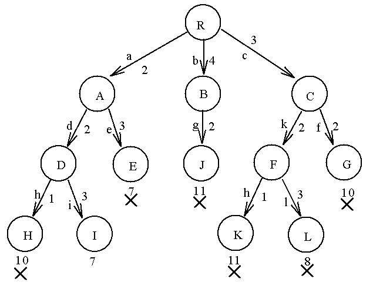
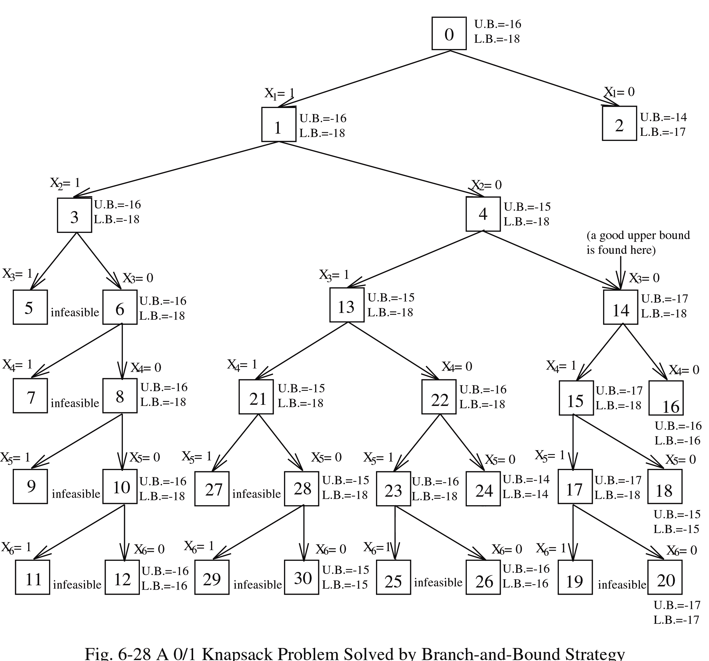

g/h/f bookkeeping, and read the bounds off a knapsack branch-and-bound. Two optimization tools, one shared idea — a bound that never overestimates lets the first goal you pull off the list be the optimal one.考試會考：用手把一次 A* 的展開從頭走一遍，g/h/f 全部記清楚；還要會從 knapsack branch-and-bound 的樹上讀出上下界（bounds）。這兩個最佳化工具其實共用同一個點子——只要 bound 永遠不會高估，你第一個從清單裡撈出來的 goal 就保證是最佳解。This lesson covers two unrelated-looking problems that share one trick: a bound that never lies in the optimistic direction lets you stop early and still be sure you found the best answer. Before any machinery, here is each problem in plain words.這一課要講兩個看起來八竿子打不著、但其實用同一招的問題：只要你有一個永遠不會往樂觀那邊亂猜的 bound，你就可以提早收手，又敢確定撈到的是最佳解。先別管那些機制，我們用白話把這兩個問題講清楚。
A* — finding the cheapest route to a goal. Imagine a road map. You start at one town (the root) and want to reach a destination town (the goal node) along roads, where each road has a cost (miles, money, time). A least-cost path is the cheapest way to get there. A* is a method that explores the map outward, always working next on whichever partial route looks most promising, until it can prove it has the cheapest route to the goal.A*——找出到 goal 最便宜的那條路。你可以想成一張公路地圖。你從某個城鎮出發（root），想沿著道路開到目的地城鎮（goal node），每條路都有成本（里程、油錢、時間都行）。least-cost path 就是到那裡最省的走法。A* 做的事就是把地圖一圈圈往外探，每次都先處理「現在看起來最有希望」的那條半成品路徑，一直到它能證明手上這條就是到 goal 最便宜的為止。
"Most promising" is measured by one number per place you could be at, call that place a node n:那「最有希望」怎麼量？每個你可能待著的位置（我們叫它一個 node n）都配一個數字：
g = the miles already on the odometer. h = your guess of the miles left (e.g. straight-line distance to the destination on the map). f = g + h = your guess of the whole trip. A* always works next on the route with the smallest f — the one that looks cheapest end-to-end.用開車來想：你已經開到一半了。g = 里程表上已經跑掉的距離。h = 你猜還要開多遠（例如看地圖上到目的地的直線距離）。f = g + h = 你猜整趟大概要多少。A* 每次都先處理 f 最小的那條——也就是從頭到尾看起來最便宜的路。The guess h(n) is called a heuristic (an educated estimate). Write h*(n) for the true cheapest cost from n to the goal — what you'd get if you somehow knew the answer. A heuristic is called admissible when it never overestimates: h(n) ≤ h*(n) for every node. (Straight-line distance is admissible: real roads can only be longer than a straight line, never shorter.)這個猜測 h(n) 就叫 heuristic（有根據的估計值）。我們用 h*(n) 代表從 n 到 goal 真正最便宜的成本——也就是你開了天眼知道答案時會拿到的那個值。如果一個 heuristic 永遠不會高估，我們就說它是 admissible：對每個 node 都滿足 h(n) ≤ h*(n)。（直線距離就是 admissible 的：真實道路只會比直線長，不可能更短。）
h never overestimates, then f(n) is never bigger than the true best total through n — so f is an honest lower bound. Now suppose A* picks a goal node off the list because it has the smallest f. Every other route still waiting has an f at least this big, and its real cost can only be that high or higher. So nothing waiting can beat the goal we just pulled — the first goal you select for expansion is guaranteed optimal, and you can stop.為什麼 admissibility 就是整個重點。只要 h 永遠不高估，f(n) 就不會超過「通過 n 的真正最佳總成本」——也就是說 f 是個誠實的 lower bound。重點來了：假設 A* 撈出某個 goal node，是因為它的 f 最小。那其他還在排隊的路徑，f 都至少這麼大，而它們的真實成本只會更貴、不會更便宜。所以排隊的沒有一條贏得過我們剛撈出來的這個 goal——你第一個挑出來展開的 goal 就保證是最佳解，可以直接收工了。The 0/1 knapsack problem — packing a bag for maximum value. You have a bag (the knapsack) that can hold at most M units of weight. There are several items; each item i has a weight Wᵢ and a profit (value) Pᵢ. You must choose a subset of the items to pack so that their total weight stays within M and their total profit is as large as possible. The "0/1" part means each item is all-or-nothing: you either take the whole item (Xᵢ = 1) or leave it (Xᵢ = 0) — no cutting it in half.0/1 knapsack 問題——把背包裝到價值最高。你有一個背包（knapsack），最多裝 M 單位的重量。有好幾件物品，每件 i 都有自己的 weight Wᵢ 和 profit（價值）Pᵢ。你要從裡面挑一個子集（subset）裝進去，條件是總重量不能超過 M，而總 profit 要越大越好。「0/1」就是說每件物品只有「拿」跟「不拿」兩種：整件拿走（Xᵢ = 1）或完全不碰（Xᵢ = 0）——不准切一半。
Notice you can't just grab the single most valuable item — you must weigh combinations against the capacity. That is what makes it hard.注意喔，你不能只挑那件最值錢的就走——你得把各種組合拿去跟容量比較才行。這正是它難的地方。
The fractional relaxation — an easier cousin that bounds the hard one. "Relax" means loosen a rule to make a problem easier. Here we drop the all-or-nothing rule and allow taking fractions of items (0 ≤ Xᵢ ≤ 1) — like pouring out part of a sack of grain. This fractional knapsack is easy: sort items by density Pᵢ/Wᵢ (profit per unit weight) and greedily take the best-value-per-pound items first, slicing the last one to fill the bag exactly. Because the relaxed version has strictly more freedom than the 0/1 version, its best profit is always at least as good — so it gives a bound (a guaranteed ceiling) on the all-or-nothing answer. That bound is exactly the "never-overestimate" tool A* uses, reused here to prune the search.fractional relaxation——一個比較好解、又能把難題界住的表親。「Relax」（鬆弛）就是把某條規則放寬，讓問題變好解。這裡我們把「整件拿或不拿」這條規則拿掉，改成可以拿物品的一部分（0 ≤ Xᵢ ≤ 1）——想成一袋穀物可以倒出一部分那種。這樣的 fractional knapsack 超好解：把物品按 density Pᵢ/Wᵢ（每單位重量值多少 profit）排序，貪心地先拿最划算的，裝到最後一件就切開、剛好把背包塞滿。因為這個鬆弛版的自由度嚴格地比 0/1 版多，它的最佳 profit 一定不會比較差——所以它就成了原本那題的一個 bound（保證跨不過去的天花板）。而這個 bound，其實就是 A* 那個「永不高估」的工具，在這裡拿來剪枝（prune）搜尋。
A* is plain best-first search (Lesson 1's global-view knob: keep all partial routes open and always expand the globally best-looking one) aimed at optimization. Every open node carries a number:A* 說穿了就是 best-first search（第 1 課那個「全域視角」的旋鈕：把所有半成品路徑都留著，每次展開全域看起來最好的那條），只是這次目標是最佳化（optimization）。每個 open node 都掛著一個數字：
Expand the open node with the smallest f. The magic is the admissibility condition:每次就展開 f 最小的那個 open node。神奇的地方在 admissibility condition：
h(n) ≤ h*(n) for every node (the heuristic never overestimates), then f(n) = g(n)+h(n) ≤ g(n)+h*(n) = f*(n) — so f is a lower bound on the best solution through n. Consequence: the first goal node selected for expansion is optimal, and you can stop. Reaching a goal that merely sits in the list is not enough — it must be the smallest-f node you pick.Admissibility：只要每個 node 都滿足 h(n) ≤ h*(n)（heuristic 永不高估），就有 f(n) = g(n)+h(n) ≤ g(n)+h*(n) = f*(n)——也就是說 f 是「通過 n 的最佳解」的 lower bound。結論就是：第一個被你挑出來展開的 goal node 就是最佳解，可以收手了。注意：goal 只是「在清單裡」還不算數——它得是你真的挑中、f 最小的那個才行。Here is the actual search tree A* walks (Fig. 6-36, slides 37–42), relabeled R (root) … L. Each edge carries its cost (the increment to g) and each node carries its heuristic h (the small number beside/below it). Build f = g + h from these.這就是 A* 實際走過的 search tree（Fig. 6-36，投影片 37–42），節點重新標成 R（root）一路到 L。每條 edge 上寫的是它的成本（也就是 g 要加多少），每個 node 旁邊／下面的小數字就是它的 heuristic h。你用這些自己把 f = g + h 算出來。

Fig. 6-36 — the A* search tree. Edge labels are letter-id, cost; the bare number under each node is its h. (× marks a generated-but-unexpanded leaf.) Goal node is I.Fig. 6-36——A* 的 search tree。Edge 上的標籤是 letter-id, cost；每個 node 下面那個單獨的數字就是它的 h。（× 代表這個 leaf 有生成但沒展開。）Goal node 是 I。
The same graph as a (g, h, f) table — children listed left→right, expand smallest f, ties broken by the note's order:同一張圖，改用 (g, h, f) 的形式列出來——子節點由左排到右，每次展開 f 最小的，f 一樣時就照上面註記的順序決定：
Work out the order nodes are expanded and which node ends the search, then reveal.先自己推出 node 展開的順序，還有是哪個 node 讓搜尋停下來，再點開看答案。
Open list always sorted by f; expand the front. Newly added children in bold:Open list 永遠照 f 排好；每次展開排最前面那個。這一步新加進去的子節點用粗體標：
Expansion order: R → A → C → D → B → F, then the search terminates by selecting goal node I (f = g = 7, since h(I)=0). Note the correction: F is just the last node expanded — it is not the goal. I is the goal, and because f(I)=7 is the smallest open value when selected, that path is provably optimal (cost 7 = S→V₁→V₄→T = 2+2+3).展開順序是 R → A → C → D → B → F，然後搜尋就在選中 goal node I 的這一刻停下來（f = g = 7，因為 h(I)=0）。這裡要特別講清楚：F 只是最後一個被展開的 node，它不是 goal。真正的 goal 是 I；而因為 I 被選中時 f(I)=7 是 open 裡最小的，這條路就能保證是最佳的（成本 7 = S→V₁→V₄→T = 2+2+3）。
Items sorted by density Pᵢ/Wᵢ (non-increasing). Capacity M = 34, n = 6. Maximize Σ PᵢXᵢ with Xᵢ ∈ {0,1}.物品先按 density Pᵢ/Wᵢ 由大到小排好。容量 M = 34，n = 6。要在 Xᵢ ∈ {0,1} 的限制下，讓 Σ PᵢXᵢ 最大。
| i | 1 | 2 | 3 | 4 | 5 | 6 |
|---|---|---|---|---|---|---|
| Pᵢ | 6 | 10 | 4 | 5 | 6 | 4 |
| Wᵢ | 10 | 19 | 8 | 10 | 12 | 8 |
The deck turns this into a minimization by negating profit (objective −Σ PᵢXᵢ) so the same lower-bound machinery as TSP/personnel applies — more negative is better. Branch on Xᵢ = 1 vs Xᵢ = 0 at level i.講義的做法是把 profit 取負（目標變成 −Σ PᵢXᵢ），這樣就把這題改成最小化（minimization），可以直接套用跟 TSP／personnel 一樣的 lower-bound 那套——記住越負越好就對了。然後在第 i 層分成 Xᵢ = 1 和 Xᵢ = 0 兩支去 branch。
Upper bound — a feasible integer solution. Greedily take items 1 and 2:Upper bound——隨便找一個可行的整數解。貪心地把物品 1 和 2 拿走：
"Any solution higher than −16 cannot be optimal" — we already have something this good, so −16 caps the search.換句話說「比 −16 還高的解都不可能是最佳」——反正我們手上已經有這麼好的了，所以 −16 就幫整個搜尋封了頂。
Lower bound — fractional (greedy) relaxation. Relax Xᵢ ∈ {0,1} to 0 ≤ Xᵢ ≤ 1; fill by density until M is exactly full, taking a fraction of the last item:Lower bound——fractional（貪心）relaxation。把 Xᵢ ∈ {0,1} 放寬成 0 ≤ Xᵢ ≤ 1；照 density 一路裝到 M 剛好滿，最後一件就拿它的一部分：
The fractional optimum is at least as good as any integer solution (it has strictly more freedom), so −18.5 is a valid lower bound on the true objective. Since the real 0/1 objective is an integer, round inward to −18.fractional 的最佳解不會比任何整數解差（它的自由度嚴格地更多），所以 −18.5 是真正目標值一個有效的 lower bound。又因為真正的 0/1 目標值一定是整數，所以往內收成 −18。
So before searching a single internal node we know the answer lives in [−18, −16]. Branch-and-bound then refines it. Here is the completed search tree (Fig. 6-28): every box is a node in creation order, edges are labeled Xᵢ=1 / Xᵢ=0, and each live node carries its U.B. (best feasible found) and L.B. (relaxation bound). The optimum −17 is read off the X₁=0 sub-branch (node 14, annotated "a good upper bound is found here").所以還沒搜任何一個 internal node，我們就已經知道答案夾在 [−18, −16] 之間了。接下來 branch-and-bound 就是把這個區間一步步收緊。下面是畫完的 search tree（Fig. 6-28）：每個方框是一個 node，照建立順序編號，edge 上標 Xᵢ=1 / Xᵢ=0，每個還活著的 node 都掛著它的 U.B.（目前找到的最佳可行解）和 L.B.（relaxation 的 bound）。最佳值 −17 是在 X₁=0 這支讀出來的（node 14，旁邊註記「a good upper bound is found here」）。

Fig. 6-28 — 0/1 knapsack solved by branch-and-bound. Root node 0 = (U.B. −16, L.B. −18); the −17 optimum surfaces at node 14 on the X₁=0 branch.Fig. 6-28——用 branch-and-bound 解 0/1 knapsack。Root node 0 = (U.B. −16, L.B. −18)；−17 這個最佳值在 X₁=0 那支的 node 14 冒出來。
X1 = X4 = X5 = 1, rest 0. Weight = W1+W4+W5 = 10+10+12 = 32 ≤ 34 ✓, objective = −(P1+P4+P5) = −(6+5+6) = −17. And −18 ≤ −17 ≤ −16 — it sits inside the bracket, exactly as the bounds promised. (A good upper bound of −17 first appears at node 14, the X1=0 branch.)最佳解（直接從畫好的 tree 讀）：X1 = X4 = X5 = 1，其餘 0。重量 = W1+W4+W5 = 10+10+12 = 32 ≤ 34 ✓，目標值 = −(P1+P4+P5) = −(6+5+6) = −17。而且 −18 ≤ −17 ≤ −16——剛好落在區間裡，跟 bound 一開始說的一模一樣。（−17 這個漂亮的 upper bound 最早就是在 node 14、也就是 X1=0 那支出現的。）
Pick before you read the feedback. Getting it wrong then seeing why builds memory better than re-reading.先選答案再看解釋。先答錯、再搞懂為什麼，記得比一直重讀還牢。
Primary source: R.C.T. Lee, S.S. Tseng, R.C. Chang, Y.T. Tsai — Introduction to the Design and Analysis of Algorithms, Ch 6 §6.10 (0/1 knapsack B&B, Fig. 6-27/6-28) and §6.11 (the A* algorithm, f=g+h, Fig. 6-36), your Alg05 slides. Re-trace Fig. 6-36 and confirm the goal is I (slide 42: "I is a goal node!") — F is only the last node expanded.主要來源：R.C.T. Lee, S.S. Tseng, R.C. Chang, Y.T. Tsai——Introduction to the Design and Analysis of Algorithms，第 6 章 §6.10（0/1 knapsack B&B，Fig. 6-27/6-28）和 §6.11（A* algorithm，f=g+h，Fig. 6-36），也就是你的 Alg05 投影片。建議自己把 Fig. 6-36 再走一遍，確認 goal 是 I（投影片 42 寫著「I is a goal node!」）——F 只是最後一個被展開的 node 而已。
See also the Glossary → Ch6 and the full chapter note (A05) for every per-node bound in Fig. 6-28.也可以翻 Glossary → Ch6 跟完整的章節筆記（A05），那邊有 Fig. 6-28 裡每個 node 的 bound。
📣 I'm your teacher — ask me anything. Want me to re-run the A* trace step by step, draw the full knapsack tree with every node's bounds, or contrast A*'s h(n) with the reduced-cost bound? Just say so.📣 我就是你的老師——有問題儘管丟。想要我把 A* 追蹤一步步重跑一次、把完整的 knapsack tree 畫出來並標上每個 node 的 bound，或是把 A* 的 h(n) 跟 reduced-cost bound 擺一起比較？說一聲就好。
Score this lesson out of 5 to yourself. 4–5 → on to Lesson 4. ≤3 → tell me which question and we drill it.幫自己這一課打個分（滿分 5）。4–5 → 直接往第 4 課。≤3 → 跟我說是哪一題，我們把它練熟。